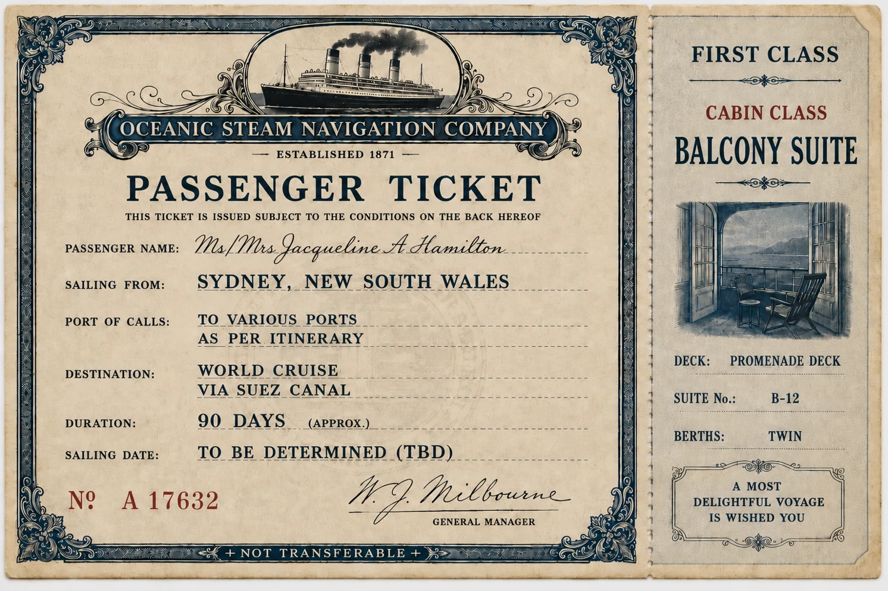
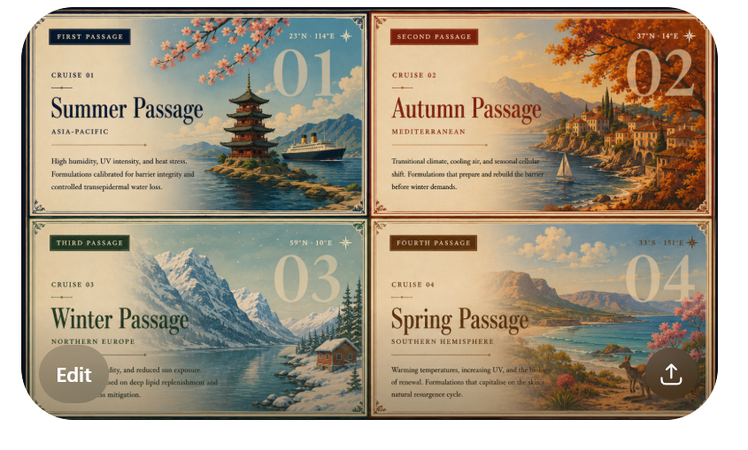

ARK is a clinically tracked skincare voyage — measured by data, directed by you
b o d y + s k i n
Ninety days. Four seasons. One skin, finally understood.
A clinically tracked voyage for women who have exhausted the promises
and are ready for the evidence.
Voyage
A voyage is best taken at an unhurried pace. For a woman accustomed to giving her time to others, you are invited to claim a moment entirely for yourself. Perhaps take a browse through the ARK Voyage before stepping into The Suite. Wander through The Itinerary, get comfortable with the journey, and explore the rhythm of the 90-day seasonal timelines. We prefer not to manufacture a single drop until you feel entirely ready to embark.
The Honesty Statement
We'll be honest with you. We don't love the idea of a subscription box either. You've probably cancelled a few. So have we. But here's what we've learned about women like us. We are exceptionally good at looking after everyone else first. The cruise continues automatically because you said it should — not because we decided it for you. You chose this. We're simply making sure it actually happens. When you're done — you disembark. No friction. No guilt. No follow-up call. Until you're ready to sail again.

Four seasonal cruises. Four global environments. One continuous voyage.

We'll send you a private link. Take one selfie. That photograph becomes your baseline — the before that makes the ninety days worth measuring.
Your number is used only to send your analysis link. Never shared.
The question is not whether your skin is changing.
It is whether you are paying attention to what it is actually asking for.
ARK Body + Skin
The Technology
3M+
Tracked facial data points. The clinical foundation beneath every ARK assessment.
90
Days per cruise. Long enough to measure real biological change. Short enough to see it.
4
Mirror moment assessments per cruise — Day 0, 30, 60, 90. The data shapes every formulation decision.
Peer-reviewed
Diagnostic engine published in international dermatological journals. An independent clinical auditor — not a retail scanner.